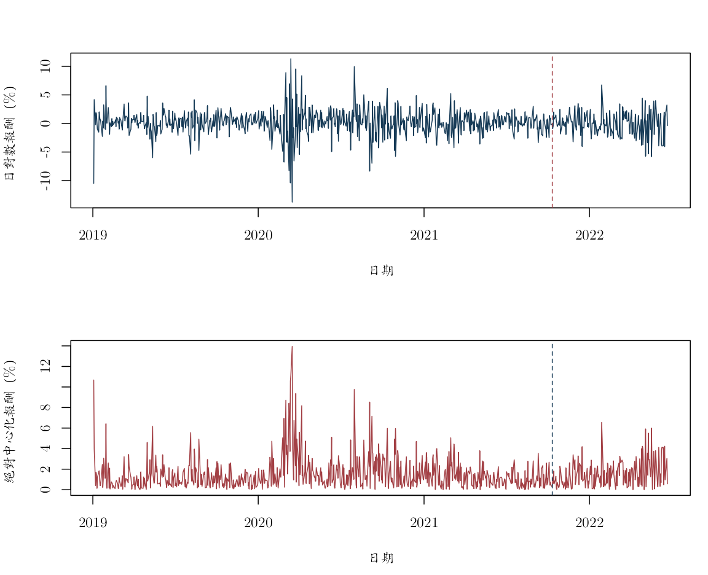

《財務時間序列分析》線上附錄
R08：ARCH、GARCH、非對稱波動與預測
本附錄對應第 11--12 章，使用真實 AAPL 日對數報酬估計 GARCH(1,1) 與 GJR--GARCH(1,1)。資料源自原課程 S&P 500 價格檔；有效樣本為 2019-01-03 至 2022-06-22，共 874 筆，單位是小數日對數報酬。固定版本與建置方式見 data/DATA_SOURCES.md。
最後 20% 樣本保留作一次性測試。平均數、變異數參數與初始尺度都只由前 80% 訓練期估計；測試期每一期先形成波動預測，才讀入當期實現報酬更新下一期狀態。主線先用 R 內建的 optim() 透明重建遞迴與目標函數，再加入原課程教師講義使用的 fGarch::garchFit() 捷徑；兩條路徑都只使用固定資料與相同訓練期。
條件波動模型描述歷史上的條件變異動態；正負報酬的不對稱關聯不能自動解讀成「壞消息造成波動」的因果效果，也不構成投資建議。
knitr::opts_chunk$set(
echo = TRUE, message = FALSE, warning = FALSE,
fig.width = 8, fig.height = 5,
dev = "ragg_png", dpi = 144,
dev.args = list(background = "white")
)
required_r <- "4.3.0"
stopifnot(getRversion() >= required_r)
root_candidates <- c(".", "..")
is_root <- vapply(root_candidates, function(x) {
file.exists(file.path(x, "main.tex"))
}, logical(1))
stopifnot(any(is_root))
project_root <- root_candidates[which(is_root)[1]]
project_path <- function(...) file.path(project_root, ...)
stopifnot(
requireNamespace("ragg", quietly = TRUE),
requireNamespace("systemfonts", quietly = TRUE)
)
cwtex_file <- project_path("assets", "fonts", "cwTeXQKai-Medium.ttf")
stopifnot(file.exists(cwtex_file))
if (!"cwTeX Online" %in% systemfonts::registry_fonts()$family) {
systemfonts::register_font("cwTeX Online", cwtex_file)
}
plot_family <- "cwTeX Online"
讀取資料並鎖定訓練期#
aapl <- read.csv(project_path(
"data", "processed", "aapl_adjusted_daily_2019_2022.csv"
))
aapl$date <- as.Date(aapl$date)
aapl <- aapl[order(aapl$date), ]
aapl <- aapl[is.finite(aapl$log_return), ]
row.names(aapl) <- NULL
stopifnot(
!anyNA(aapl$date), !anyNA(aapl$log_return),
all(diff(aapl$date) > 0)
)
n <- nrow(aapl)
train_end <- floor(0.80 * n)
train_dates <- aapl$date[seq_len(train_end)]
test_dates <- aapl$date[(train_end + 1L):n]
# 常數平均數只用訓練期估計，之後固定。
mu_train <- mean(aapl$log_return[seq_len(train_end)])
train <- aapl$log_return[seq_len(train_end)] - mu_train
test <- aapl$log_return[(train_end + 1L):n] - mu_train
split_table <- data.frame(
區段 = c("訓練期", "測試期"),
起日 = c(min(train_dates), min(test_dates)),
迄日 = c(max(train_dates), max(test_dates)),
觀察值 = c(length(train), length(test)),
報酬單位 = "日對數報酬，小數",
資料來源 = "原課程 S&P 500 價格檔的 AAPL 固定版本",
check.names = FALSE
)
knitr::kable(split_table)
| 區段 | 起日 | 迄日 | 觀察值 | 報酬單位 | 資料來源 |
|---|---|---|---|---|---|
| 訓練期 | 2019-01-03 | 2021-10-11 | 699 | 日對數報酬，小數 | 原課程 S&P 500 價格檔的 AAPL 固定版本 |
| 測試期 | 2021-10-12 | 2022-06-22 | 175 | 日對數報酬，小數 | 原課程 S&P 500 價格檔的 AAPL 固定版本 |
data.frame(
訓練期平均日對數報酬 = mu_train,
訓練期報酬標準差 = sd(train),
check.names = FALSE
)
## 訓練期平均日對數報酬 訓練期報酬標準差
## 1 0.001879715 0.02195292
以下 $a_t=r_t-\widehat{\mu}_{\mathrm{train}}$。固定訓練期平均數可讓波動預測的資訊邊界一目了然；它不是平均數與變異數聯合最大概似估計。
報酬與平方報酬的相依#
old_par <- par(
mfrow = c(2, 1), mar = c(4.5, 4, 3, 1),
family = plot_family
)
plot(
aapl$date, 100 * aapl$log_return,
type = "l", col = "#173B57",
xlab = "日期", ylab = "日對數報酬（%）"
)
abline(v = max(train_dates), lty = 2, col = "#A34045")
plot(
aapl$date, 100 * abs(aapl$log_return - mu_train),
type = "l", col = "#A34045",
xlab = "日期", ylab = "絕對中心化報酬（%）"
)
abline(v = max(train_dates), lty = 2, col = "#173B57")

par(old_par)
old_par <- par(
mfrow = c(1, 2), mar = c(4.2, 4, 4, 1),
family = plot_family, cex.main = 0.9
)
acf(train, lag.max = 30, main = "中心化報酬 ACF")
acf(train^2, lag.max = 30, main = "平方報酬 ACF")

par(old_par)
方向相關與波動相關是不同問題。平均數模型沒有明顯相關，不代表條件變異數是常數。
ARCH--LM 輔助迴歸#
arch_lm <- function(residual, lags = 10L) {
stopifnot(lags >= 1L, length(residual) > 5L * lags)
x2 <- residual^2
n <- length(x2)
response <- x2[(lags + 1L):n]
X <- sapply(seq_len(lags), function(j) {
x2[(lags + 1L - j):(n - j)]
})
colnames(X) <- paste0("lag", seq_len(lags))
fit <- lm(response ~ X)
statistic <- nobs(fit) * summary(fit)$r.squared
data.frame(
落後階數 = lags,
LM統計量 = statistic,
卡方近似p值 = pchisq(
statistic, df = lags, lower.tail = FALSE
),
check.names = FALSE
)
}
knitr::kable(arch_lm(train, lags = 10), digits = 6)
| 落後階數 | LM統計量 | 卡方近似p值 |
|---|---|---|
| 10 | 166.9343 | 0 |
訓練期 ARCH--LM 統計量約為 166.93，卡方近似 $p$ 值在目前數值精度下顯示為 0，清楚反對常數條件變異的簡化模型。
ARCH--LM 的小 $p$ 值只是反對「指定落後的平方殘差係數同時為零」，不會自動決定 GARCH 階數或創新分配。
GARCH 與 GJR--GARCH 規格#
對稱 GARCH(1,1) 設定 $\gamma=0$；GJR 模型使用
\[ h_t=\omega+\alpha a_{t-1}^2 +\gamma\mathbf 1(a_{t-1}<0)a_{t-1}^2 +\beta h_{t-1}. \]
在對稱創新下，GJR 的二階持續性以 $\alpha+\beta+\gamma/2$ 衡量。下列參數轉換強制 $\omega>0$、$\alpha\geq0$、$\beta\geq0$、$\gamma\geq0$，並把持續性限制在 0.999 以下。
map_garch <- function(eta) {
raw <- exp(eta[2:3])
denominator <- 1 + sum(raw)
c(
omega = exp(eta[1]),
alpha = 0.999 * raw[1] / denominator,
beta = 0.999 * raw[2] / denominator,
gamma = 0
)
}
map_gjr <- function(eta) {
raw <- exp(eta[2:4])
denominator <- 1 + sum(raw)
c(
omega = exp(eta[1]),
alpha = 0.999 * raw[1] / denominator,
beta = 0.999 * raw[2] / denominator,
gamma = 2 * 0.999 * raw[3] / denominator
)
}
filter_variance <- function(a, par) {
n <- length(a)
h <- numeric(n)
h[1] <- var(a)
for (t in 2:n) {
h[t] <- par["omega"] +
par["alpha"] * a[t - 1]^2 +
par["gamma"] * as.numeric(a[t - 1] < 0) * a[t - 1]^2 +
par["beta"] * h[t - 1]
}
h
}
gaussian_nll <- function(eta, a, model = c("garch", "gjr")) {
model <- match.arg(model)
par <- if (model == "garch") map_garch(eta) else map_gjr(eta)
h <- filter_variance(a, par)
if (any(!is.finite(h)) || any(h <= 0)) return(1e100)
0.5 * sum(log(2 * pi) + log(h[-1]) + a[-1]^2 / h[-1])
}
常態準最大概似（quasi-maximum likelihood, QML）不宣稱 AAPL 創新服從常態分配。這裡也沒有計算穩健 sandwich 標準誤，因此重點放在條件變異遞迴與樣本外損失，而不是係數顯著性。
多起點最佳化#
手動最佳化可能受初始值影響。以下為每個模型使用三組具經濟意義的起點，保留收斂且目標函數最小的結果。
garch_start <- function(v, alpha, beta) {
persistence <- alpha + beta
slack <- 0.999 - persistence
stopifnot(slack > 0)
c(
log(v * (1 - persistence)),
log(alpha / slack),
log(beta / slack)
)
}
gjr_start <- function(v, alpha, beta, gamma) {
persistence <- alpha + beta + gamma / 2
slack <- 0.999 - persistence
stopifnot(slack > 0)
c(
log(v * (1 - persistence)),
log(alpha / slack),
log(beta / slack),
log((gamma / 2) / slack)
)
}
fit_multistart <- function(starts, a, model) {
fits <- lapply(starts, function(start) {
optim(
start, gaussian_nll, a = a, model = model,
method = "BFGS",
control = list(maxit = 3000, reltol = 1e-10)
)
})
acceptable <- vapply(fits, function(z) {
z$convergence == 0 && is.finite(z$value)
}, logical(1))
stopifnot(any(acceptable))
candidates <- which(acceptable)
fits[[candidates[which.min(vapply(
fits[candidates], function(z) z$value, numeric(1)
))]]]
}
v_train <- var(train)
garch_starts <- list(
garch_start(v_train, 0.08, 0.87),
garch_start(v_train, 0.10, 0.80),
garch_start(v_train, 0.05, 0.92)
)
gjr_starts <- list(
gjr_start(v_train, 0.05, 0.88, 0.08),
gjr_start(v_train, 0.05, 0.84, 0.10),
gjr_start(v_train, 0.03, 0.90, 0.10)
)
fit_garch <- fit_multistart(garch_starts, train, "garch")
fit_gjr <- fit_multistart(gjr_starts, train, "gjr")
par_garch <- map_garch(fit_garch$par)
par_gjr <- map_gjr(fit_gjr$par)
parameter_table <- rbind(
GARCH = c(
par_garch,
persistence = unname(
par_garch["alpha"] + par_garch["beta"]
),
Gaussian_QML_objective = fit_garch$value
),
GJR = c(
par_gjr,
persistence = unname(
par_gjr["alpha"] + par_gjr["beta"] +
par_gjr["gamma"] / 2
),
Gaussian_QML_objective = fit_gjr$value
)
)
knitr::kable(parameter_table, digits = 7)
| omega | alpha | beta | gamma | persistence | Gaussian_QML_objective | |
|---|---|---|---|---|---|---|
| GARCH | 1.98e-05 | 0.1460643 | 0.8067101 | 0.0000000 | 0.9527744 | -1794.201 |
| GJR | 2.25e-05 | 0.0739291 | 0.7930422 | 0.1614216 | 0.9476821 | -1799.158 |
stopifnot(
par_garch["alpha"] + par_garch["beta"] < 0.999,
par_gjr["alpha"] + par_gjr["beta"] + par_gjr["gamma"] / 2 < 0.999
)
GJR 的不對稱係數估計值約為 0.1614，訓練期高斯 QML 目標函數也較低；這是條件關聯與配適結果，沒有穩健標準誤時不作顯著性宣稱，更不能作因果解讀。
兩個模型的目標函數可以在同一訓練資料上比較，但多一個參數會提高彈性；不能只看訓練期目標函數就宣告 GJR 必然有較佳預測。
原課程套件捷徑：fGarch::garchFit()#
本節取自原課程教師程式
slides/L07_ARCH_GARCH/W2L2_R_template_GARCH.R。該程式以
garchFit(~ arma(1,0) + garch(1,1), cond.dist = "QMLE") 聯合估計
AR(1) 平均數與 GARCH(1,1)，並以
garchFit(~ arma(1,0) + aparch(1,1), delta = 2) 示範非對稱規格。
以下保留兩個公式，但把即時下載的 AAPL 換成同一份固定 CSV，且一律只用訓練期。
為了與前面的手動 GARCH 作公平核對，另外配適一個「對齊規格」：先扣除已凍結的
$\widehat{\mu}_{\mathrm{train}}$，再設定 include.mean = FALSE。這個版本與手動
GARCH 使用相同的固定平均數與變異數方程；兩者仍可能因初始變異數與概似實作細節而有
小幅差異。APARCH 的 gamma1 則屬於套件的符號與冪次參數化，不能直接當成前面
GJR 指標函數中的 $\gamma$ 比較。
stopifnot(requireNamespace("fGarch", quietly = TRUE))
raw_train <- aapl$log_return[seq_len(train_end)]
fgarch_lecture_garch <- fGarch::garchFit(
~ arma(1, 0) + garch(1, 1),
data = raw_train,
cond.dist = "QMLE",
trace = FALSE
)
fgarch_lecture_aparch <- fGarch::garchFit(
~ arma(1, 0) + aparch(1, 1),
data = raw_train,
delta = 2,
include.delta = FALSE,
cond.dist = "norm",
trace = FALSE
)
fgarch_aligned <- fGarch::garchFit(
~ garch(1, 1),
data = train,
include.mean = FALSE,
cond.dist = "QMLE",
trace = FALSE
)
coefficient_or_na <- function(coefficient, term) {
if (term %in% names(coefficient)) {
unname(coefficient[term])
} else {
NA_real_
}
}
coef_lecture_garch <- fgarch_lecture_garch@fit$coef
coef_lecture_aparch <- fgarch_lecture_aparch@fit$coef
coef_aligned <- fgarch_aligned@fit$coef
fgarch_specification_table <- data.frame(
規格 = c(
"原課程 AR(1)-GARCH；QMLE",
"原課程 AR(1)-APARCH；delta=2",
"對齊手動版：固定平均 GARCH；QMLE"
),
平均數處理 = c(
"聯合估計 AR(1)",
"聯合估計 AR(1)",
"固定訓練期平均數"
),
mu = c(
coefficient_or_na(coef_lecture_garch, "mu"),
coefficient_or_na(coef_lecture_aparch, "mu"),
mu_train
),
ar1 = c(
coefficient_or_na(coef_lecture_garch, "ar1"),
coefficient_or_na(coef_lecture_aparch, "ar1"),
NA_real_
),
omega = c(
coefficient_or_na(coef_lecture_garch, "omega"),
coefficient_or_na(coef_lecture_aparch, "omega"),
coefficient_or_na(coef_aligned, "omega")
),
alpha1 = c(
coefficient_or_na(coef_lecture_garch, "alpha1"),
coefficient_or_na(coef_lecture_aparch, "alpha1"),
coefficient_or_na(coef_aligned, "alpha1")
),
beta1 = c(
coefficient_or_na(coef_lecture_garch, "beta1"),
coefficient_or_na(coef_lecture_aparch, "beta1"),
coefficient_or_na(coef_aligned, "beta1")
),
gamma1_APARCH = c(
NA_real_,
coefficient_or_na(coef_lecture_aparch, "gamma1"),
NA_real_
),
check.names = FALSE
)
knitr::kable(fgarch_specification_table, digits = 7)
| 規格 | 平均數處理 | mu | ar1 | omega | alpha1 | beta1 | gamma1_APARCH |
|---|---|---|---|---|---|---|---|
| 原課程 AR(1)-GARCH；QMLE | 聯合估計 AR(1) | 0.0031347 | -0.0816236 | 1.87e-05 | 0.1546890 | 0.8057698 | NA |
| 原課程 AR(1)-APARCH；delta=2 | 聯合估計 AR(1) | 0.0026045 | -0.0662198 | 2.13e-05 | 0.1484408 | 0.7940558 | 0.2645228 |
| 對齊手動版：固定平均 GARCH；QMLE | 固定訓練期平均數 | 0.0018797 | NA | 1.96e-05 | 0.1485739 | 0.8064884 | NA |
par_fgarch_aligned <- c(
omega = coefficient_or_na(coef_aligned, "omega"),
alpha = coefficient_or_na(coef_aligned, "alpha1"),
beta = coefficient_or_na(coef_aligned, "beta1"),
gamma = 0
)
stopifnot(
all(is.finite(par_fgarch_aligned)),
par_fgarch_aligned["omega"] > 0,
par_fgarch_aligned["alpha"] >= 0,
par_fgarch_aligned["beta"] >= 0,
par_fgarch_aligned["alpha"] + par_fgarch_aligned["beta"] < 1
)
common_gaussian_objective <- function(a, par) {
h <- filter_variance(a, par)
0.5 * sum(
log(2 * pi) + log(h[-1]) + a[-1]^2 / h[-1]
)
}
aligned_comparison <- rbind(
手動_optim固定平均 = c(
par_garch[c("omega", "alpha", "beta")],
persistence = unname(par_garch["alpha"] + par_garch["beta"]),
共同目標函數 = common_gaussian_objective(train, par_garch)
),
fGarch固定平均 = c(
par_fgarch_aligned[c("omega", "alpha", "beta")],
persistence = unname(
par_fgarch_aligned["alpha"] + par_fgarch_aligned["beta"]
),
共同目標函數 = common_gaussian_objective(
train, par_fgarch_aligned
)
)
)
knitr::kable(aligned_comparison, digits = 7)
| omega | alpha | beta | persistence | 共同目標函數 | |
|---|---|---|---|---|---|
| 手動_optim固定平均 | 1.98e-05 | 0.1460643 | 0.8067101 | 0.9527744 | -1794.201 |
| fGarch固定平均 | 1.96e-05 | 0.1485739 | 0.8064884 | 0.9550623 | -1794.191 |
前一張規格表的第一、二列回答原課程的聯合平均數—波動問題；第三列才是用來核對本附錄手動固定平均版本的橋梁。緊接著的兩列對照表只比較後者與手動 optim()。若兩個對齊版本的參數不完全相同，應先查看初始化與概似定義，而不是把差異誤認為資料或公式錯誤。
標準化殘差診斷#
diagnose_variance <- function(a, par, label) {
h <- filter_variance(a, par)
z <- a / sqrt(h)
q_z <- Box.test(z, lag = 20, type = "Ljung-Box")
q_z2 <- Box.test(z^2, lag = 20, type = "Ljung-Box")
data.frame(
模型 = label,
Q20_標準化殘差 = unname(q_z$statistic),
p_標準化殘差 = q_z$p.value,
Q20_平方標準化殘差 = unname(q_z2$statistic),
p_平方標準化殘差 = q_z2$p.value,
check.names = FALSE
)
}
diagnostic_table <- rbind(
diagnose_variance(train, par_garch, "GARCH"),
diagnose_variance(train, par_gjr, "GJR"),
diagnose_variance(
train, par_fgarch_aligned, "fGarch 固定平均 GARCH"
)
)
knitr::kable(diagnostic_table, digits = 6)
| 模型 | Q20_標準化殘差 | p_標準化殘差 | Q20_平方標準化殘差 | p_平方標準化殘差 |
|---|---|---|---|---|
| GARCH | 24.51595 | 0.220581 | 19.23106 | 0.506856 |
| GJR | 23.05409 | 0.286146 | 18.75490 | 0.537805 |
| fGarch 固定平均 GARCH | 24.40605 | 0.225105 | 19.26644 | 0.504573 |
Ljung--Box 結果是診斷線索，不是模型正確的證明；尾端形狀、符號不對稱、參數邊界與樣本穩定性仍需另查。
無資料洩漏的一步波動預測#
one_step_h <- function(previous_a, previous_h, par) {
par["omega"] +
par["alpha"] * previous_a^2 +
par["gamma"] * as.numeric(previous_a < 0) * previous_a^2 +
par["beta"] * previous_h
}
forecast_locked <- function(train, test, par) {
h_train <- filter_variance(train, par)
previous_a <- tail(train, 1)
previous_h <- tail(h_train, 1)
forecast <- numeric(length(test))
for (j in seq_along(test)) {
forecast[j] <- one_step_h(previous_a, previous_h, par)
# test[j] 在 forecast[j] 形成後，才進入下一期狀態。
previous_a <- test[j]
previous_h <- forecast[j]
}
forecast
}
hhat_garch <- forecast_locked(train, test, par_garch)
hhat_gjr <- forecast_locked(train, test, par_gjr)
hhat_fgarch <- forecast_locked(train, test, par_fgarch_aligned)
# 60 期歷史變異數基準：每一期只用目標日以前的觀察。
all_centered <- c(train, test)
hhat_hist60 <- numeric(length(test))
for (j in seq_along(test)) {
target_index <- train_end + j
past_index <- (target_index - 60L):(target_index - 1L)
hhat_hist60[j] <- var(all_centered[past_index])
}
stopifnot(
all(hhat_garch > 0),
all(hhat_gjr > 0),
all(hhat_fgarch > 0),
all(hhat_hist60 > 0)
)
QLIKE 與平方損失#
qlike <- function(realized_square, variance_forecast) {
log(variance_forecast) + realized_square / variance_forecast
}
loss_row <- function(h, label) {
data.frame(
模型 = label,
QLIKE = mean(qlike(test^2, h)),
平方損失_x1e8 = 1e8 * mean((test^2 - h)^2),
平均預測日波動_pct = 100 * mean(sqrt(h)),
check.names = FALSE
)
}
loss_table <- rbind(
loss_row(hhat_hist60, "歷史 60 期"),
loss_row(hhat_garch, "GARCH"),
loss_row(hhat_gjr, "GJR"),
loss_row(hhat_fgarch, "fGarch 固定平均 GARCH")
)
knitr::kable(loss_table, digits = 8)
| 模型 | QLIKE | 平方損失_x1e8 | 平均預測日波動_pct |
|---|---|---|---|
| 歷史 60 期 | -6.781018 | 42.37544 | 1.766730 |
| GARCH | -6.794816 | 42.28975 | 1.979972 |
| GJR | -6.806984 | 43.85074 | 2.041123 |
| fGarch 固定平均 GARCH | -6.794924 | 42.33644 | 1.988171 |
上表分別以 QLIKE 與放大 $10^8$ 倍後的平方損失排序；兩個指標的最小值直接由表中的數字判讀。套件對齊版也使用相同的固定平均數、逐期資訊集合與損失函數，因此這一列比較的是估計實作差異，不是額外看過測試期後才選出的新模型。
test^2 是不可觀察條件變異數的高雜訊代理，因此 QLIKE 與平方損失可能給不同排序。這正是同時報告多種損失函數、避免只挑有利指標的理由。
old_par <- par(family = plot_family)
plot(
test_dates, 100 * abs(test),
type = "l", col = "gray70",
xlab = "目標日期", ylab = "幅度或預測標準差（%）"
)
lines(test_dates, 100 * sqrt(hhat_garch), col = "#173B57", lwd = 1.5)
lines(test_dates, 100 * sqrt(hhat_gjr), col = "#A34045", lwd = 1.5)
lines(test_dates, 100 * sqrt(hhat_fgarch), col = "#7A5C99", lwd = 1.3)
lines(test_dates, 100 * sqrt(hhat_hist60), col = "#3F7158", lwd = 1.3)
legend(
"topright",
c(
"|中心化報酬|", "GARCH", "GJR",
"fGarch 固定平均 GARCH", "歷史 60 期"
),
col = c(
"gray70", "#173B57", "#A34045", "#7A5C99", "#3F7158"
),
lty = 1, lwd = c(1, 1.5, 1.5, 1.3, 1.3),
bty = "n", cex = 0.8
)

par(old_par)
時間邊界檢查#
origin_dates <- c(max(train_dates), head(test_dates, -1))
timing_table <- data.frame(
目標日期 = test_dates,
可用到的最後日期 = origin_dates,
時序正確 = origin_dates < test_dates,
check.names = FALSE
)
knitr::kable(head(timing_table, 8))
| 目標日期 | 可用到的最後日期 | 時序正確 |
|---|---|---|
| 2021-10-12 | 2021-10-11 | TRUE |
| 2021-10-13 | 2021-10-12 | TRUE |
| 2021-10-14 | 2021-10-13 | TRUE |
| 2021-10-15 | 2021-10-14 | TRUE |
| 2021-10-18 | 2021-10-15 | TRUE |
| 2021-10-19 | 2021-10-18 | TRUE |
| 2021-10-20 | 2021-10-19 | TRUE |
| 2021-10-21 | 2021-10-20 | TRUE |
stopifnot(all(timing_table$時序正確))
模擬只作單元檢查#
下列固定種子模擬不產生任何 AAPL 實證數字，只檢查 GJR 遞迴是否保持正變異數，以及同幅度負面衝擊是否在 $\gamma>0$ 時給出較高的下一期變異數。
simulate_gjr <- function(
n, omega, alpha, beta, gamma,
burn = 300L, seed = 808L) {
persistence <- alpha + beta + gamma / 2
stopifnot(
omega > 0, alpha >= 0, beta >= 0,
gamma >= 0, persistence < 1
)
set.seed(seed)
total <- n + burn
z <- rnorm(total)
a <- numeric(total)
h <- numeric(total)
h[1] <- omega / (1 - persistence)
a[1] <- sqrt(h[1]) * z[1]
for (t in 2:total) {
h[t] <- omega + alpha * a[t - 1]^2 +
gamma * as.numeric(a[t - 1] < 0) * a[t - 1]^2 +
beta * h[t - 1]
a[t] <- sqrt(h[t]) * z[t]
}
keep <- (burn + 1L):total
data.frame(a = a[keep], h = h[keep])
}
unit_truth <- c(
omega = 2e-6, alpha = 0.05, beta = 0.88, gamma = 0.08
)
unit_sim <- simulate_gjr(
n = 500,
omega = unit_truth["omega"],
alpha = unit_truth["alpha"],
beta = unit_truth["beta"],
gamma = unit_truth["gamma"]
)
h_reference <- mean(unit_sim$h)
positive_next <- one_step_h(0.02, h_reference, unit_truth)
negative_next <- one_step_h(-0.02, h_reference, unit_truth)
unit_table <- data.frame(
檢查 = c("模擬最小變異數", "+2% 衝擊的下一期變異數", "-2% 衝擊的下一期變異數"),
數值 = c(min(unit_sim$h), positive_next, negative_next),
check.names = FALSE
)
knitr::kable(unit_table, digits = 8)
| 檢查 | 數值 |
|---|---|
| 模擬最小變異數 | 2.303e-05 |
| +2% 衝擊的下一期變異數 | 6.539e-05 |
| -2% 衝擊的下一期變異數 | 9.739e-05 |
stopifnot(
all(is.finite(unit_sim$h)),
all(unit_sim$h > 0),
negative_next > positive_next
)
可重現結論#
本附錄把真實實證與模擬檢查分開：AAPL 係數、診斷與測試損失全部由固定資料實跑；模擬只檢查符號與遞迴。手動 optim() 與教師講義的 fGarch::garchFit() 結果並列，且套件對齊版沿用同一個固定平均數與測試期資訊邊界。正式報告還應保存 R 版本、fGarch 版本、訓練截止日、多起點設定、所有收斂碼、損失函數與逐期預測。
sessionInfo()
## R version 4.5.2 (2025-10-31)
## Platform: aarch64-apple-darwin20
## Running under: macOS Tahoe 26.5.1
##
## Matrix products: default
## BLAS: /System/Library/Frameworks/Accelerate.framework/Versions/A/Frameworks/vecLib.framework/Versions/A/libBLAS.dylib
## LAPACK: /Library/Frameworks/R.framework/Versions/4.5-arm64/Resources/lib/libRlapack.dylib; LAPACK version 3.12.1
##
## locale:
## [1] C.UTF-8/C.UTF-8/C.UTF-8/C/C.UTF-8/C.UTF-8
##
## time zone: Asia/Tokyo
## tzcode source: internal
##
## attached base packages:
## [1] stats graphics grDevices utils datasets methods base
##
## other attached packages:
## [1] tibble_3.3.0 dplyr_1.2.1
##
## loaded via a namespace (and not attached):
## [1] shape_1.4.6.1 gtable_0.3.6 xfun_0.57
## [4] ggplot2_4.0.3 collapse_2.1.7 lattice_0.22-7
## [7] quadprog_1.5-8 vctrs_0.7.2 tools_4.5.2
## [10] Rdpack_2.6.6 generics_0.1.4 curl_7.0.0
## [13] parallel_4.5.2 sandwich_3.1-1 xts_0.14.2
## [16] pkgconfig_2.0.3 gbutils_0.5.1 Matrix_1.7-4
## [19] tidyverse_2.0.0 RColorBrewer_1.1-3 S7_0.2.1
## [22] lifecycle_1.0.5 compiler_4.5.2 farver_2.1.2
## [25] maxLik_1.5-2.2 textshaping_1.0.5 codetools_0.2-20
## [28] htmltools_0.5.9 glmnet_4.1-10 Formula_1.2-5
## [31] pillar_1.11.1 MASS_7.3-65 plm_2.6-7
## [34] iterators_1.0.14 foreach_1.5.2 nlme_3.1-168
## [37] fracdiff_1.5-4 pls_2.9-0 fBasics_4052.98
## [40] tidyselect_1.2.1 bdsmatrix_1.3-7 digest_0.6.39
## [43] labeling_0.4.3 splines_4.5.2 tseries_0.10-62
## [46] miscTools_0.6-30 fastmap_1.2.0 grid_4.5.2
## [49] colorspace_2.1-2 cli_3.6.5 magrittr_2.0.4
## [52] utf8_1.2.6 survival_3.8-3 withr_3.0.2
## [55] scales_1.4.0 forecast_9.0.2 TTR_0.24.4
## [58] rmarkdown_2.31 quantmod_0.4.29 otel_0.2.0
## [61] timeDate_4052.112 ragg_1.5.2 zoo_1.8-15
## [64] timeSeries_4052.112 fGarch_4052.93 urca_1.3-4
## [67] evaluate_1.0.5 knitr_1.51 rbibutils_2.4.1
## [70] lmtest_0.9-40 rlang_1.1.7 spatial_7.3-18
## [73] Rcpp_1.1.0 glue_1.8.0 R6_2.6.1
## [76] cvar_0.6 systemfonts_1.3.2